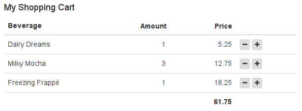

Widgets and Activities
Widgets and activities are the "work horse" of any LaxarJS application. They make up the bulk of the user interface and provide all client-side application logic.
Preliminary readings:
If you are already familiar with widgets, and just need a refresher on the widget.json descriptor, skip to the reference section below.
Widget Responsibilities
Before starting to implement your widget, take a moment to think and delineate its responsibilities. You can do this by phrasing the question: What goal does this widget help the user to accomplish? Are you thinking about a very broadly applicable, technical task such as "allow the user to enter a date" or "allow the user to delete a data row"? In this case you might want to implement this functionality as a control and use it within one or more of your widgets.
Usually, widgets correspond to significant areas of the screen and are composed of multiple controls. They are built with a specific user-goal in mind, such as "allow the user to book a flight" or "allow the user to review shopping cart contents". If widgets are made too small and too generic, page definitions will be confusing and the widget configuration options become unwieldy. As a rule of thumb, only very complex pages should contain more than a about a dozen widgets. And who wants to have very complex pages anyway?
When to use Activities
Activities are "invisible widgets" that are used to fetch and manage application resources. Within the page, they may represent a REST API or a data store, fetching resources and performing relevant service calls (such as a form submission) upon action request. If you are familiar with AngularJS, you might recognize that activities perform a role similar to AngularJS services. The advantage over services is that using activities puts the page author in control over instantiation and configuration: Individual widget instances may each be connected to their own activity instance, or share an event bus topic with a single instance.
Activities may also serve as a mediator between widgets that use mutually incompatible event vocabularies (such as different resource formats). This may happen when integrating a widget from a third party into an application.
Integration Technologies
LaxarJS serves as a middleware layer that allows you to organize and connect isolated front end components to form an application. However, it has no say in how the individual widgets and their UI are implemented. Instead it tries to support you in using readily available frameworks such as React, Vue.JS and Angular. To integrate widgets that were created in different UI technologies, a piece of glue code is needed, the so-called integration technology adapter.
The only adapter included with LaxarJS Core is the adapter for the integration technology "plain", which does not rely on any specific framework, but leaves it up to the widget author to choose what (if any) supporting libraries should be loaded by the widget.
There is a dedicated manual on the "plain" adapter.
Another adapter offered by the LaxarJS project is the laxar-angular-adapter supporting the integration technology "angular", meaning AngularJS v1.
Because "angular" was the built-in technology for LaxarJS v1 and many developers are familiar with its basics, it is still used frequently throughout the examples in this documentation.
Combining Integration Technologies
You are encouraged to evaluate different integration technologies for use in your project, especially if you are starting from scratch
For now, the LaxarJS project provides adapters for the technologies vue, angular (1), react, and angular2.
Once familiar with the basics, feel free to create your adapter.
However, keep in mind that each integration technology adds to your overall application bundle size, impacting application load time and memory consumption.
While mixing three view frameworks may be fine for an intranet application, online applications should generally aim for using a single integration technology, or maybe two technologies during a framework transition -- mobile users will thank you for it!
Of course, "plain" is always free and does not weigh in here.
How to Create a Widget
The easiest way to create a widget is to use the LaxarJS Yeoman generator. Check out the README on how to obtain it, and how to use it for creating an application.
Start by creating a sub-directory for your new widget within the LaxarJS application.
Each widget in an application lives within a sub-folder of the widget root (application/widgets/ by default).
To change the widget root, you can create a file laxar.config.js in your application directory, and use the export path.widgets to override the widget root.
The widget path application/widgets/shopping-cart-widget is used as an example path throughout this manual.
The last component of the widget path is the so-called widget directory, which uses the name of the widget itself.
The widget name must be unique throughout an application and should be written in lower case letters with components separated by dashes.
Widget names always end in -widget whereas activities always end in -activity.
To create the actual widget, run:
cd widgets/shopping-cart-widget
yo laxarjs:widget
The generator will ask for some details on the widget such as license and author, but you can always edit this information in the widget sources afterwards. In the following steps, it is assumed that you used the widget name shopping-cart-widget as above.
Widget Files
A newly created widget contains the following files:
widget.json
This widget descriptor contains meta-data about your widget that is used by the LaxarJS framework.
The descriptor contains the name of the widget and specifies both integration type ("widget" or "activity") and integration technology (such as "angular" or "react").
Finally, the descriptor allows to describe configuration options of your widget features using a JSON schema, so that configuration will be validated automatically.
shopping-cart-widget.js
The business logic of your shopping cart (like calculating a total or changing item quantities) as a JavaScript module. The precise contents of the widget module depend on the integration technology used by your widget. Usually, it exports either a class constructor, or a plain factory function to create the widget instance. When a widget is instantiated by the LaxarJS runtime, it is passed a set of widget services including the event bus, which allows for communication with other widget instances.
default.theme/shopping-cart-widget.html
The HTML template defining the appearance of your widget. Again, the integration technology determines the syntax that is supported in the template. When your widget is used on a page, LaxarJS will load this automatically and bind it to your widget controller's scope. The Bootstrap CSS classes are made available by the LaxarJS default.theme to facilitate uniform styling across widgets. If Bootstrap does not suit you, feel free to use a different framework (or none at all) in your own theme, but keep in mind that this limits opportunities for widget reuse. Similarly to controllers, all widget templates will be bundled within a single JSON file when your application is packaged for release.
default.theme/css/shopping-cart-widget.css
Widget-specific style definitions. Most of the time, your widget is fine just using CSS style definitions from the global application theme. In this case, it can do completely without CSS folders. Sometimes though, you have style definitions which are widget-specific (such as CSS animations) and should not be part of the global theme. If your widget has its own CSS file, LaxarJS will load it when the widget is used in an application, and bundle it for release.
package.json
This optional file specifies the dependencies of your widget for use with npm. If you want to version and package you widget as a standalone component for use in multiple applications, this is the recommended way to describe the widget and its dependencies.
LaxarJS supports to change the appearance of an existing widget by overriding its template or its CSS styles from within a custom theme. It is also possible to put shared style definitions (CSS classes and SCSS variables) as well as shared assets like fonts and images into that theme. To get started with some simple styling, you do not have to concern yourself with themes or SCSS. However they are very useful for adapting widgets to different applications and web sites. Read more about themes once you are familiar with creating and using widgets.
Widget Files for Testing
The sub folder spec contains the widget spec test and, possibly associated resources.
While we recommend writing tests for your widget, note that the spec folder is not required.
None of these files are loaded during regular application runtime.
spec/shopping-cart-widget.spec.js
This should be a Jasmine 2 spec test. If you used the LaxarJS generator to setup your application including configuration for karma and webpack, this spec can be run on the command-line using karma, or as an interactive HTML test in the browser, by using the webpack-jasmine-html-runner-plugin.
For projects that were generated using the Yeoman generator for LaxarJS, you can start the karma test-runner for your widgets using npm test.
Implementing a Controller
To write the controller for your widget, you will need to implement some business logic. For a very simple shopping cart this means
-
summing the contents of the cart
-
increasing or decreasing the quantity of individual positions within the cart.
Throughout this example, we will be using the angular integration technology (AngularJS v1), as it is familiar to developers coming from LaxarJS v1.
Different integration technologies should work in a similar fashion.
For more information on the AngularJS integration, consult the angular adapter documentation.
The Yeoman generator has already created an empty controller along with some AngularJS infrastructure (module and injections). For a shopping cart, this might be an appropriate starting implementation with some dummy data:
import * as ng from 'angular'; Controller.$inject = [ '$scope' ]; function Controller( $scope ) { $scope.model = [ { label: 'Dairy Dreams', price: 5.25, amount: 1 }, { label: 'Milky Mocha', price: 12.75, amount: 3 }, { label: 'Freezing Frappé', price: 18.25, amount: 1 } ]; $scope.increment = item => { ++item.amount; }; $scope.decrement = item => { item.amount = Math.max( 0, item.amount - 1 ); }; $scope.total = rows => rows.reduce( (total, item) => total + item.price * item.amount, 0 ); } export const name = ng.module( 'shoppingCartWidget', [] ) .controller( 'ShoppingCartWidgetController' ).name;
The adapter for the integration technology "angular" makes it possible for a widget controller in LaxarJS to work just like any other AngularJS controller.
Of course, things will get more interesting once you use the event bus to receive shopping cart contents from somewhere else, or to signal that an order should be placed.
Creating a Template
The purpose of creating an HTML template is to provide your widget with an appearance on the screen. For anyone familiar with Bootstrap and AngularJS, most of this should not be a surprise:
<h4 ng-bind-html="features.headline.htmlText"></h4> <table class="table"> <thead> <tr> <th>Beverage</th> <th class="cart-amount">Price</th> <th class="cart-price">Amount</th> <th></th> </tr> </thead> <tfoot> <tr> <th colspan="3" class="cart-price">{{ total( model ) }}</th> <th></th> </tr> </tfoot> <tr ng-repeat="item in model"> <td>{{ item.label }}</td> <td class="cart-amount">{{ item.amount }}</td> <td class="cart-price">{{ item.price }}</td> <td> <button ng-click="decrement( item )" class="btn btn-xs"> <i class="fa fa-minus" /></button> <button ng-click="increment( item )" class="btn btn-xs"> <i class="fa fa-plus" /></button> </td> </tr> </table>
Note that the LaxarJS runtime will wrap the DOM of each widget within a single DIV container.
The scope of the template is the same as for the controller so that model, decrement, increment and total will be available upon template instantiation.
The features property used within the headline comes from the widget configuration, which is described below.
Adding Some Style
A widget may be styled using CSS, or its more fancy variants such as LESS or SCSS.
To keep things simple, you can ignore SCSS and themes for now and simply write a CSS file for your widget, in our case under default.theme/css/shopping-cart-widget.css.
Once you are familiar with the basics, read the article on creating themes for more information.
Thanks to Bootstrap CSS, this widget does not require a lot of fancy styling:
.shopping-cart-widget .cart-amount, .shopping-cart-widget .cart-price { text-align: right; }
For best encapsulation, selectors should be prefixed with the widget class (.shopping-cart-widget) as shown here.
LaxarJS automatically adds this class to the widget container, so there is no need to specify it in the widget template.
It is also recommended to prefix custom CSS classes as shown here (cart-amount, cart-price), just as you would prefix custom HTML elements or attributes.
This makes widget styles more robust against changes in Bootstrap or other third party CSS.
Configuration Options
When looking at the template, you might have wondered where the features.headline.htmlText came from.
This is a feature configuration option of our widget:
We want to be able to control the headline text for each instance of our widget.
For this reason, we specify a configuration option by adding a feature entry to the widget.json:
{ "name": "shopping-cart-widget", "description": "Allows Users to Review and Modify Purchase Items", "features": { "$schema": "http://json-schema.org/draft-04/schema#", "type": "object", "properties": { "headline": { "type": "object", "properties": { "htmlText": { "type": "string", "description": "the HTML headline content" } } } } } }
The widget features are a JSON schema document that is used by LaxarJS to verify pages. It contains a property for each configurable feature, and it also allows to specify default values as needed. This makes it easy to provide self-documenting customization options for your widget.
Note that LaxarJS deviates from standard JSON schema in two respects:
-
"additionalProperties": falseis default for all schemas of"type": "object"This helps to catch typing errors. -
"format"allows for the LaxarJS specific value"topic", and checks it to validate event topics. See the manual on events for details on event topic syntax. -
defaults for features (first level of widget/composition schema) are inferred if they are of type
"array"or"object". This eliminates the need to repeat nested defaults on the feature-level.
Note that using schemas is optional: If a widget descriptor does not specify a schema, any configuration will be considered valid and passed to the widget controller, which can be useful for prototyping. However, it is strongly recommended to add a schema before releasing a widget or putting it into production, if only to document the available configuration.
See the reference section for a reference of the widget descriptor.
Checking out the Result
Before we can take a look at the widget, we will need to integrate it into the page provided by the application template (application/pages/page1.json).
{ "layout": "one_column", "areas": { "activities": [], "header": [], "content": [ { "widget": "shopping-cart-widget", "features": { "headline": { "htmlText": "My Shopping Cart" } } } ], "footer": [] } }
I you would like to know more, there is dedicated manual to learn more about writing pages.
Now we can start the development web server provided by LaxarJS, from the application root:
npm install # if you have not already
npm start
Navigate to http://localhost:8080/debug.html to admire the fruits of your labor:

Now that you have learned the basics in creating widgets, take a closer look at widget testing.
Testing a Widget
One of the major goals of LaxarJS is to simplify the development and testing of isolated components.
For this reason, a basic widget test has already been prepared when using yo laxarjs:widget.
Writing Spec-Tests
For testing widgets and activities in isolation, we recommend to use the library LaxarJS Mocks, which allows to setup a test bed for widgets that were created in any integration technology. There you'll also find manuals and an introduction on how to test widgets in isolation.
Running the Test
The LaxarJS Mocks Setup Instructions explain how to run widget tests from the command line using karma, or interactively using a generated HTML test runner. Hopefully this makes it simple to set up continuous testing for your application.
LaxarJS Widget Reference
Building on top of the basics covered so far, sometimes it is helpful to know about all the options available to widget authors.
This section covers the details of the widget specification format and the properties available on the $scope in case of an AngularJS widget.
Widget Descriptor Format
Each widget has a widget.json file which is also called widget descriptor.
LaxarJS contains a widget schema definition that defines the exact format of this file.
These are the most important widget properties:
name
This required field contains the name of the widget, used to find its implementation module, template and stylesheet. The name must match the spelling and case of the module name (minus .js extension) exactly.
description
What this widget is about. Ideally, this contains the main user-goal mentioned in the first section.
features
The widget features. This is an optional (but highly recommended) JSON schema object that documents the configurable widget features. For each widget instance used on a page, LaxarJS will check the feature configuration of that instance against this schema. This also allows to provide default values for configuration options.
compatibility
An optional list of new LaxarJS features that this widget is compatible with. It allows individual widgets to opt in to breaking LaxarJS changes (similarly to the Python import from future construct), without harming widgets that do not yet support these changes.
In the past, this was used to opt-in to a new event vocabulary. Right now, there are no upcoming features to be activated here.
controls
An optional list of LaxarJS controls used by this widget.
Each control is represented by its path, which may either be relative to the controls-root (usually application/controls) or resolvable by the module loader (webpack).
This allows the LaxarJS runtime to automatically load the modules and CSS styles associated with these controls whenever your widget is used.
Refer to Providing Controls on loading user interface components and their resources in this manner.
templateSource
You can load the template from a different source in order to support a preprocessing syntax such as Mustache or pug.
Simply set the templateSource to the respective path relative to the theme folder, such as shopping-cart-widget.pug and make sure that an appropriate (webpack) loader is installed.
styleSource
Instead of CSS you can also use SCSS or LESS, by providing this entry in the widget.json, which must be a path within the theme-folder (for example scss/shopping-cart-widget.scss).
Make sure that you have a (webpack) loader installed to handle the file type of your choice.
Widget Services
The widget controller has access to a set of injectable widget services, which are described in detail in the manual on widget services.
When using the integration technology "angular", these are passed as AngularJS controller injections, along with the AngularJS $scope.
The LaxarJS angular adapter puts some additional properties on the scope that simplify writing templates and controller logic:
$scope.features
An alias to the axFeatures widget service injection, useful for (one-time) template bindings.
$scope.eventBus
An alias to the axEventBus widget service injection, for publish/subscribe interaction.
$scope.widget.idA unique identifier for this widget within the page. You can use it to generate unique DOM IDs, for example to connectlabelandinputelements in an HTML form.
In other integration technologies, an object with these helpers is made available through the axContext injection.